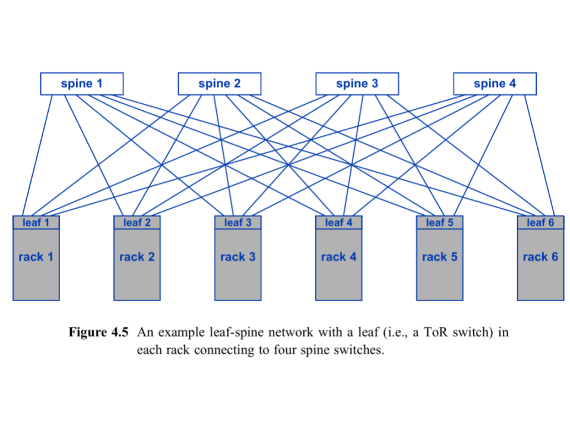
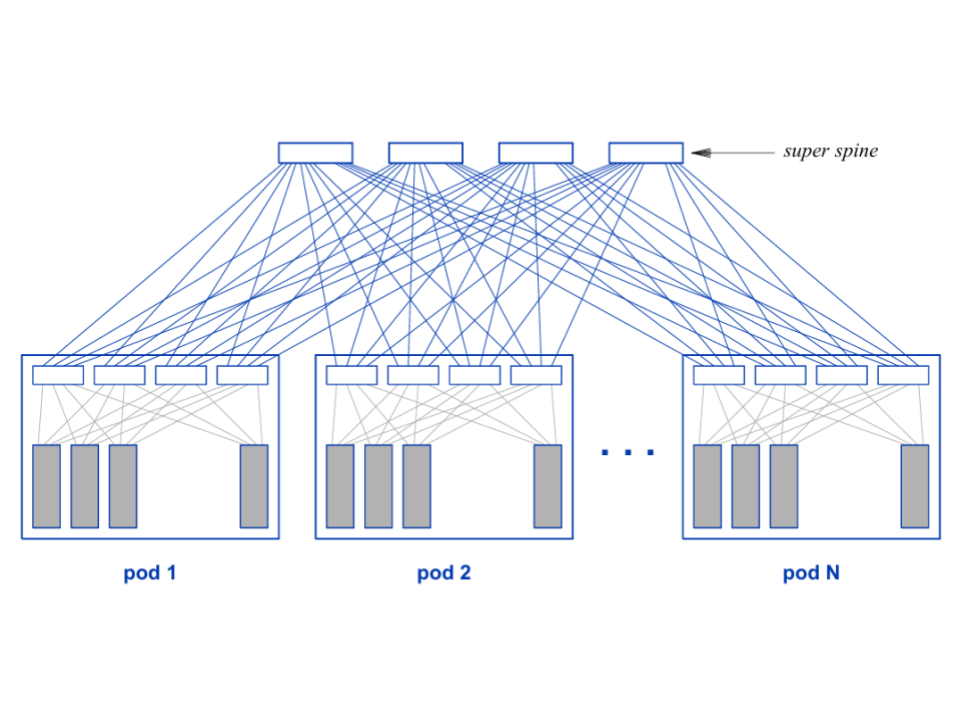

Regular expressions (regex) are patterns used to search, match, and manipulate text.
They allow you to describe rules for text in a concise way, making them useful for tasks
like validating input, searching logs, extracting data, or performing find-and-replace operations.
Using Regex in Python: Python provides the "re" module for working with regex.
import re
pattern = r"\d+"
text = "There are 24 apples"
match = re.search(pattern, text)
if match:
print("Found:", match.group())
For hands-on practice, I highly recommend the interactive exercises on RegexOne.
They provide clear explanations and progressively challenging problems to make learning regex easier.
Understanding how and where the CPU begins is crucial for low-level programming and OS design. The following is a simple
breakdown of that process.
Step 1 - CPU Startup: When powered on, a CPU (Intel, AMD, etc.) immediately begins executing
instructions at a fixed reset vector (e.g., 0xFFFF0).
Step 2 - Firmware Mapping: BIOS/UEFI manufacturers (AMI, Phoenix, etc.) write firmware that lives in
read-only memory (ROM/flash). Motherboard manufacturers wire the hardware so that this firmware is mapped to the
CPU's reset vector. This electrical mapping is what makes the firmware appear exactly where the CPU expects it
when the system powers on.
Step 3 - Hardware Initialization and Bootloader: Once running, the BIOS/UEFI firmware performs POST (Power-On Self-Test),
verifying that the CPU, RAM, storage devices, and essential motherboard components are present and functioning
correctly before searching for a bootable device.
Step 5 - Kernel Handoff: When found he bootloader loads the operating system kernel into RAM and jumps to its
entry point. At this moment, control transfers from firmware to the operating system, and the CPU begins executing
kernel code.
In modern IT environments, storage solutions are critical for data access, performance, and management.
Two common architectures are Network Attached Storage (NAS) and Storage Area Network (SAN).
While both provide centralized storage, they differ in how they serve data and how clients interact with it.
Network Attached Storage (NAS):
NAS is designed for file-level access. It serves files over a network to multiple users and devices.
It is ideal for shared file storage, backups, and collaborative environments.
NAS commonly uses NFS (Network File System), originally developed by Sun Microsystems, to allow clients to access files over the network.
Storage Area Network (SAN):
SAN works at the block level, providing clients with virtual disks called LUNs (Logical Unit Numbers).
Each LUN defines a virtual partition of a physical disk, giving clients more control over their storage.
SAN is typically used in environments that require high performance and scalable storage for databases, virtualization, and enterprise applications.
Connectivity Options for SAN:
iSCSI - Transfers block-level data over an existing IP network.
Pros: lower cost, uses existing infrastructure
Cons: slower than dedicated channels
Fibre Channel - Uses a dedicated network for high-speed block-level transfers.
Pros: high performance, low latency
Cons: higher cost, requires specialized hardware
Quick Comparison:
- NAS -> File-level access, simple setup, good for collaboration
- SAN -> Block-level access, high performance, suitable for enterprise applications
For deeper learning, check out SNIA SAN Resources and Red Hat NAS Guide.
In modern data centers, the leaf-spine network architecture is commonly used to improve performance, scalability, and redundancy.
It handles large amounts of east-west traffic efficiently.
Basic Leaf-Spine Diagram:


The UNIX and Pre UNIX Era:
Before UNIX, IBM Mainframes dominated computing. Their operating systems were written in Assembly, locking software to specific hardware. In 1969, Ken Thompson and Dennis Ritchie at AT&T Bell Labs challenged this by developing UNIX on a discarded PDP-7. In 1972, Ritchie created the C programming language to solve the problem of hardware lock-in. Because UNIX was rewritten in C, developers could simply recompile the C code for other hardware. While they built the core kernel and file system, their manager, Doug McIlroy, also pushed them to include a feature that allowed programs to be coupled together. His vision inspired the UNIX philosophy: “Write programs that do one thing and do it well”. The result was that in 1972, Thompson implemented the pipe() system call and the famous '|' symbol, which is still used today. Before pipes, developers manually passed data between programs using disk. Pipes were revolutionary since they kept results in memory.
While the technology was impressive, due to a 1956 antitrust ruling, AT&T was legally classified as a telecommunications monopoly and as such was prohibited from operating in other businesses like computers or software. Since AT&T could not sell UNIX, they distributed it to places like academic institutions under a license. They shared the compiled software (UNIX OS), and the source code (C files) that built it. This allowed a generation of people to not just use the OS, but to open it up, study it, and modify it.
You might think, if it were under a license, then weren't they in the software business? To stay legal, AT&T charged what they called "Nominal Fees." They told the government that they weren't selling UNIX, they were simply charging the universities for the cost of the physical tape, the box it comes in, and the postage to mail it. Because they weren't making a "profit", they weren't technically "in the business".
The Introduction of the Berkley Standard Distribution:
One university that had access to this software and its source code was UC Berkeley. A graduate student named Bill Joy (who later co-founded Sun Microsystems) took this code and started adding new features like the “vi” text editor and the “cshell”.
At the time, UNIX ran on the Thompson shell 'sh'. The Thompson shell didn't have scripting features like if statements or loops; these were added in the cshell.
Under a contract from DARPA - the government agency that created the TCP/IP standard - Bill Joy and those he worked with were tasked with building the TCP/IP networking standards directly into the UNIX operating system. Their work created the socket() API. Historically, if you wanted computers to talk to one another, you needed to pay for proprietary software, which oftentimes only worked with communicating between that specific companies machines. This new "fork" of the UNIX Operating System became known as the Berkeley Software Distribution (386BSD). Its portability, no cost for entry, and ability to connect to other machines made it immensely popular.
In 1982, the era of open collaboration abruptly came to a halt, however. In an effort to crack down on monopolies, the government broke up AT&T into 7 parts. The original AT&T company, having been broken up, was now finally allowed to enter the computer and software businesses. Seeing the value of what had been built with UNIX, AT&T declared it a "trade secret". Consumers now needed to purchase System V in order to use UNIX and they were no longer able to share it with others. In response to AT&T, the Bil Joy and the Berkeley team began a coordinated effort to remove proprietary AT&T Unix code from BSD by rewriting each component with their own original implementation.
This rewrite became the foundation for three major BSD derivatives: FreeBSD (1993) for PC stability, NetBSD (1993) for extreme portability, and OpenBSD (1996) for a "security-first" focus.
While different BSD versions were gaining traction, it was soon met with litigation. AT&T sued the University of California, claiming that parts of BSD contained stolen "trade secrets". As part of the lawsuit, BSD suffered slower development and widespread hesitation from companies and developers who feared legal risk.
POSIX and GNU:
While the Berkeley Team was working on BSD and its derivatives, Richard Stallman, a staff Programmer at the MIT Artificial Intelligence Laboratory, began building the GNU Project. GNU, which stands for GNU's Not UNIX was focused on making proprietary software obsolete.
When Stallman started the GNU Project in 1983, he didn't have a free operating system yet. To write code for a new system, you need an editor, a compiler, and a debugger. Since he didn't have free versions of these yet, he had to use the proprietary UNIX systems available at MIT to write the GNU tools. GNU tools were written to be Unix-compatible and later aligned with the emerging POSIX standard. POSIX is a set of formal standards created by IEEE in the 1980s to define how "UNIX-like" Operating Systems should behave. It specifies the system calls, process model, file, and directory semantics. The idea of permissions, signals, pipes, and the command line utility was a behavior a compliant OS would also need to provide. A good example is an OS that follows the POSIX standards must have a function call that implements fork().
The biggest contribution the GNU Project made was the GPL (General Public License). The license uses copyright law in reverse (which he called Copyleft). If you purchase a product containing GPL-licensed software, you are essentially buying a "bill of rights" that grants you the freedom to run, study, modify, and redistribute the code. You have a legal right to access the source code, and once you have it, you can even give it away or sell your own modified version to others without the original seller's permission. Conversely, if you sell something that includes GPL software, your rights are balanced by strict obligations: you must provide the source code to your customers and you cannot legally prevent them from sharing or changing that code. While you can keep purely internal modifications secret, the moment you distribute the software to someone else, the "Copyleft" rule triggers, requiring you to pass on the same freedoms you received and preventing you from locking away the software.
Not only did the GNU Project contribute this license, but it also contributed the GCC Compiler. GCC initially stood for the GNU C Compiler. Its only purpose at the time was to compile C code for a future GNU operating system (which did not yet exist). It was meant to replace proprietary UNIX compilers. Since its creation, the GCC name has changed because it now supports multiple languages like C++, Fortran, Ada, Java (later-removed), Go (later-removed), and Rust (in progress in some branches). GCC was the first major success of the GNU Project, but Stallman's goal was never just to build a compiler - it was to create a completely free replacement for the Unix operating system. After GCC, the GNU team developed the Bourne Again SHell (Bash) and the GNU Coreutils, re-implementing classic UNIX commands like ls, cp, mv, rm, cat, grep, and chmod. The GNU C library (glibc) was also an important tool developed by the GNU Project. It provided the POSIX API that user programs rely on.
All of these tools were written from scratch to behave like their Unix counterparts, but without using any proprietary UNIX source code. In effect, GNU was building a free Unix-compatible userland on top of existing UNIX systems (they used UNIX to build the UNIX replacement), with the long-term goal of replacing UNIX entirely. In many ways, this endeavor was similar to that of the Berkley group. The major difference was that Berkeley wanted to improve and share UNIX software, while Stallman wanted to liberate software by guaranteeing user freedom through copyleft licensing. By 1990, GNU had built almost the entire userland of a UNIX system, but it was still missing a kernel. The GNU project did attempt to build its own kernel (the Hurd), which was based on top of the MACH design from Carnegie Mellon, but development was slow, and the OS was unstable. This gap created a growing need for a free, UNIX-like kernel, and that need set the stage for another project that emerged for an entirely different purpose…
The Introduction of Linux:
Andrew Tanenbaum, a professor in Amsterdam who taught operating systems, was struggling to find an alternative to UNIX. He needed a system that students could read and modify. UNIX licenses were now too expensive, which meant they could no longer fulfill that role. So Tanembaum decided if he couldn't legally give students UNIX, he would write a small UNIX-like OS they could study. This OS was called MINIX (Mini UNIX). He published it and its sources without using a single line of AT&T's code in the textbook Operating Systems: Design and Implementation. MINIX used a microkernel design, which meant the kernel was kept small, and most services like the file system, drivers, and memory management ran in user space. Even though MINIX source code was available, it was not free in the GNU sense. Tanenbaum required students to buy the textbook to get the code, and redistribution was restricted; these qualities made it unsuitable for the GNU project. These limitations left many developers wanting more from MINIX, and one of them was a young Finnish student who decided to build the system he wished MINIX could be.
In 1991, a 21 year old computer scientist named Linus Torvalds inspired by MINIX decided to develop a free Operating System kernel as a personal project from scratch called LINUX. When people soon realized that they could take the GNU tools and run them on the LINUX kernel, it grew in popularity. At first, LINUX had a license forbidding commercial redistribution. Eventually, however, in 1992, it was changed to be under the GPL license. After this point LINUX became the first kernel amongst a sea of other educational and proprietary kernels that was free, GPL licensed, designed for PCs, actively developed, and did not use AT&T's source code.
Most users and developers think of LINUX as shorthand for the whole ecosystem, but some, including Richard Stallman, believe that since GNU built almost the entire operating system: the compiler, shell, core utilities, libraries, and more, it should be included in the name: GNU/Linux.
Over time, development of GNU and LINUX accelerated. Thousands of contributors refined the kernel, expanded the GNU tools, and built distributions that made the system easier to use and adapt. What began as a handful of student and research projects evolved into one of the most actively developed software ecosystems in the world.